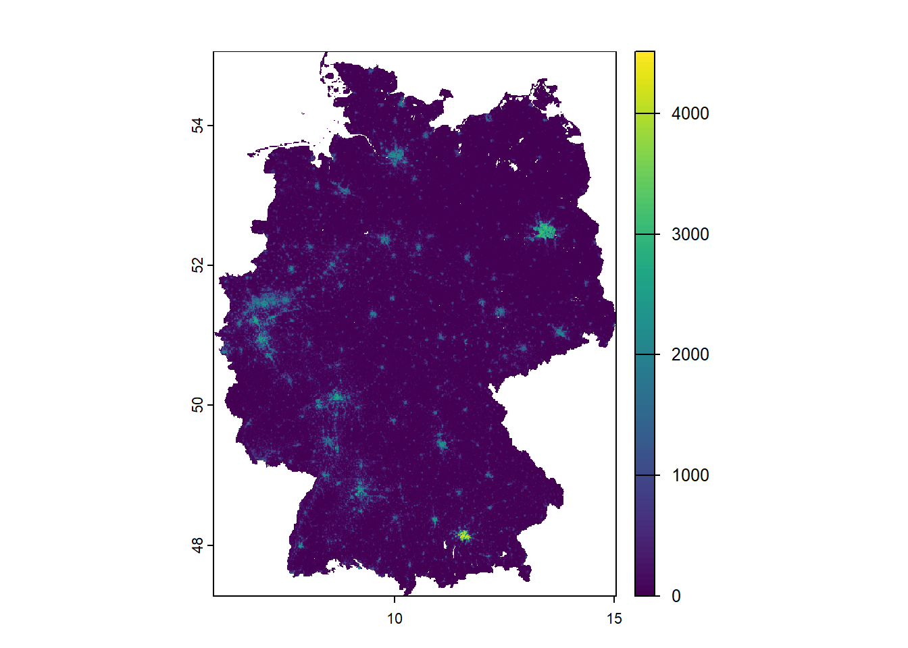

plot_call +
layer_1 +
layer_2 +
... +
layer_nGraphic Display
Graphic Display of Raster Data

Why and how should we use data visualization?
Enhancing Understanding and Interpretation
Facilitates interpretation of complex data and statistics.
Offers alternative perspectives or additional information.
Helps diagnose strengths and weaknesses of complex models (e.g. multidimensional geospatial data)
Core Tool in Data Exploration
Crucial for exploratory data analysis and data mining.
Useful in uncovering structures statistical models might miss:
- Outliers, clusters, unusual groups, trends, local patterns, boundaries, missing values etc.
Aids in data cleaning and pre-processing, especially in mulit-band raster data and temporal stacks (e.g., data cubes)
Stimulating Insight and Scientific Discovery
Raises new questions and hypotheses
Encourages critical thinking and deeper research.
‘A graphic is not worth a thousand words!’
Encouraging Critical Reflection
Do not jump to conclusions and avoid overinterpretation
Graphics must be interpreted in context:
- data source, collection methods, display choices.
Effective visualization purposeful:
- Attracting attention, focus on key features, synergize with supporting text, minimize non-data ink.
/simplexct/Slide2.jpeg)
Check out Edward Tufte’s work on data visualization to achieve graphical excellence. It is a minimalist approach to visualization which maximizes the proportion of data-ink to total ink in a plot. Tufte in R offers many examples how to translate Tufte’s perspective into graphs in R.
Visualization w/ggplot2
Why using ggplot2 for programming graphics?
- Programmability opposed to user interface facilitates “good science” in terms of reproducibility, automation, and communication. (Wickham, 2011)
In general, ggplot2 is well-suited for multi-dimensional data that can be displayed in layered plots.
What are layered plots?

Layered plots are made by stacking different parts of a chart on top of each other. Each “layer” adds something to the visual.
The main parts of a layered plot are:
Data: The numbers or values you want to show.
Aesthetics: How data is shown (like color, size, position).
Geoms (Shapes): The type of plot (points, bars, lines).
Stats: Any calculations or summaries (like averages or counts).
Position: How things are adjusted (like dodging bars).
Scales: Control how data maps to visuals (like color gradients).
Coordinates: The space the data is drawn in (like cartesian or polar).
Facets: Small multiples (splitting the plot into panels by category).
In ggplot2 these components of the plot are added as layers.
Adding aesthetics & layers
Firstly, we will add a geom to a blank canvas.
# load district shapefile
german_districts <- sf::read_sf("./data/VG250_KRS.shp")
# load district attributes
attributes_districts <-
readr::read_csv2("./data/attributes_districts.csv") |>
dplyr::mutate(ecar_share = as.numeric(ecar_share))ℹ Using "','" as decimal and "'.'" as grouping mark. Use `read_delim()` for more control.Rows: 400 Columns: 7
── Column specification ────────────────────────────────────────────────────────
Delimiter: ";"
chr (2): AGS, ecar_share
dbl (5): car_density, publictransport_meandist, population, green_voteshare,...
ℹ Use `spec()` to retrieve the full column specification for this data.
ℹ Specify the column types or set `show_col_types = FALSE` to quiet this message.# join data
german_districts_enhanced <-
german_districts |>
dplyr::left_join(attributes_districts, by = "AGS")
# load states shapefile
german_states <- sf::read_sf("./data/VG250_LAN.shp")# a simple first map
ggplot(data = german_districts_enhanced)
# a simple first map
ggplot() +
geom_sf(data = german_districts_enhanced)Now we can dive into the aesthetics of our map. When choosing a color scheme it is important to respect that:

Certain colors and color contrast can make interpretation hard.
The spatial arrangement of colors can facilitate or impede the identification of features.
Respecting how colors are perceived by different people (e.g. also people with visual impairment, general color connoation dependent on cultural background).
Are you having trouble choosing the right color? Some excellent tutorials exist, f.e, by Michael Toth.
# change color palette
ggplot() +
geom_sf(
data = german_districts_enhanced,
aes(fill = ecar_share)
) +
# readable with color vision deficiencies
scale_fill_viridis_c(option = "plasma", direction = -1)Now, we want to proceed adding more layers.
# the shapefile includes polygons of oceans and lakes
# easy fix on the fly when you know your data
german_states <-
german_states |>
dplyr::filter(GF == 4)
# add layer with German states
ggplot() +
geom_sf(
data = german_districts_enhanced,
aes(fill = ecar_share),
color = NA
) +
scale_fill_viridis_c(
option = "plasma",
direction = -1
) +
# add another layer
geom_sf(
data = german_states,
# filling transparent
fill = "transparent",
# color of borders
color = "black",
# size of borders
size = 1
)Save and reuse
Maps produced with ggplot2 are standard objects like any other object in R (they are lists). We can assign them to reuse, plot later, and add map layers.
Furthermore, you can save them just as any ggplot2 graph. The ggsave() function automatically detects the file format. You can also define the height, width, and dpi, which is particularly useful to produce high-class graphics for publications.
# assign to object
ecar_map <-
ggplot() +
geom_sf(
data = german_districts_enhanced,
aes(fill = ecar_share),
color = NA
) +
scale_fill_viridis_c(
option = "plasma",
direction = -1,
name = "E-Car Share",
guide = guide_legend(
direction = "horizontal",
label.position = "bottom"
)
) +
geom_sf(
data = german_states,
fill = "transparent",
color = "black"
)
# save as png-file
# ggsave("ecar_map.png", ecar_map, dpi = 300)Extras in ggspatial
In some specific circumstances, we might realize that ggplot2 is super powerful but not originally designed to build maps. Typical features of maps are not in the package, like a compass or scale bars.
This is where other packages might need to be installed. The good thing: Elements of the package ggspatial can be included as ggplot2 layer. Check out Github.
One can see ggspatial as an spatial add-on to the ggplot2 back end. It supports sf, sp and raster package objects. ggspatial is much more efficient in managing and reprojecting coordinate reference systems, thus reducing errors and data preparation. It includes advanced map elements such as scale bars and north arrows. The ggplot2 layer syntax remains. (Dunnington, 2023 and Dunnington, 2023)
Here is how you can add a north arrow:
# add scalebar and north arrow
ecar_map +
ggspatial::annotation_scale(
location = "br"
) +
ggspatial::annotation_north_arrow(
location = "tr",
style = ggspatial::north_arrow_minimal()
)Visualizing Population Dynamics with tidyterra
Let’s explore the suitability of ggplot2 in combination with tidyterra with a case study on population dynamics in Germany. We are utilizing the population grids from the WorldPop Open Population Repository (WOPR).
# Example with worldpop data for Germany 2020
ger_pop_2020 <- terra::rast("./data/deu_ppp_2020_1km_Aggregated.tif")
ger_pop_2020class : SpatRaster
dimensions : 934, 1100, 1 (nrow, ncol, nlyr)
resolution : 0.008333333, 0.008333333 (x, y)
extent : 5.87375, 15.04042, 47.27458, 55.05792 (xmin, xmax, ymin, ymax)
coord. ref. : lon/lat WGS 84 (EPSG:4326)
source : deu_ppp_2020_1km_Aggregated.tif
name : deu_ppp_2020_1km_Aggregated
min value : 0.000
max value : 4513.521 Let’s create a simple plot.
terra::plot(ger_pop_2020)
Let’s transform it into ETRS89/UTM 32N (EPSG: 25832). You will detect a slight adjustment to the visualization.
ger_pop_2020 <- terra::project(
ger_pop_2020,
"EPSG:25832"
)
terra::plot(ger_pop_2020)Now we will turn to ggplot2 to add layers.
ggplot() +
geom_spatraster(data = ger_pop_2020)<SpatRaster> resampled to 500346 cells.Of course we will also work on the color scheme and adjust it to our research objectif.
ggplot() +
geom_spatraster(data = ger_pop_2020) +
scale_fill_whitebox_c(
palette = "muted",
n.breaks = 12,
guide = guide_legend(reverse = TRUE)
)<SpatRaster> resampled to 500346 cells.ggplot() +
geom_spatraster(data = ger_pop_2020) +
scale_fill_viridis_c(
n.breaks = 12,
guide = guide_legend(reverse = TRUE)
)<SpatRaster> resampled to 500346 cells.For better readability and interpretation let’s also add labels.
ggplot() +
geom_spatraster(data = ger_pop_2020) +
scale_fill_viridis_c(
n.breaks = 12,
guide = guide_legend(reverse = TRUE)
) +
labs(
fill = "Population\ncount",
title = "Estimated population of Germany in 2020",
subtitle = "Approx. 1km grid"
)Visualizing raster stacks
ggplot x terra
We will start with our terra SpatRaster and load the raster stack created in the previous session.
CA_pop_stack <- terra::rast("./data/CA_pop_stack.tif")
CA_pop_stackclass : SpatRaster
dimensions : 1287, 1168, 4 (nrow, ncol, nlyr)
resolution : 828.2603, 828.2603 (x, y)
extent : -415531, 551877.1, -607609.6, 458361.4 (xmin, xmax, ymin, ymax)
coord. ref. : NAD83 / California Albers (EPSG:3310)
source : CA_pop_stack.tif
names : pop_2017, pop_2018, pop_2019, pop_2020
min values : 0.0, 0.00, 0.00, 0.00
max values : 22052.6, 22123.96, 22208.66, 22285.26
unit : count, count, count, count
time (years): 2017 to 2020 (2 steps) We already saw in the previous exercise that ggplot() initializes a blank canvas which we will fill with geoms. tidyterra's geom_spatraster() is used for plotting SpatRasterobjects. Since we already learnt about indexing we can create a single layer plot by accessing single layers.
library(tidyterra)
library(scales)Warning: Paket 'scales' wurde unter R Version 4.4.3 erstellt
Attache Paket: 'scales'Das folgende Objekt ist maskiert 'package:terra':
rescaleggplot() +
geom_spatraster(data = CA_pop_stack[[1]]) +
scale_fill_viridis_c(
na.value = "transparent",
name = "Pop count",
limits = c(0, 2000),
oob = scales::squish
) +
theme_minimal()<SpatRaster> resampled to 500782 cells.
Single layers can also be accessed with the layer name supplied to the aes(fill=) argument in geom_spatraster().
library(tidyterra)
library(scales)
ggplot() +
geom_spatraster(
data = CA_pop_stack,
aes(fill = pop_2017)
) +
scale_fill_viridis_c(
na.value = "transparent",
name = "Pop count",
limits = c(0, 2000),
oob = scales::squish
) +
theme_minimal()<SpatRaster> resampled to 500782 cells.
For visualizing all four layers simultaneously, we can utilize the facet_wrap() command. Instead of providing the name of a third variable to command, we call lyr, which geom_spatraster()recognizes as the third dimension.
ggplot() +
geom_spatraster(data = CA_pop_stack) +
scale_fill_viridis_c(
na.value = "transparent",
name = "Pop count",
limits = c(0, 2000),
oob = scales::squish
) +
facet_wrap(~lyr) +
theme_minimal()<SpatRaster> resampled to 500782 cells.Creating custom labels for your facets can generally be quite painful (not just for geodata). By default, it uses the values from the names of the SpatRaster attribute. If you want to change labels, you either change the names values (which we often don’t want to) or create a workaround. For example, here we would like to use the time values.
facet_labels <- function(label) {
years <- as.character(terra::time(CA_pop_stack))
names(years) <- names(CA_pop_stack)
new_label <- unname(years[label])
new_label
}
ggplot() +
geom_spatraster(data = CA_pop_stack) +
scale_fill_viridis_c(
na.value = "transparent",
name = "Pop count",
limits = c(0, 2000),
oob = scales::squish
) +
facet_wrap(~lyr,
labeller = labeller(
lyr = facet_labels
)
) +
theme_minimal()<SpatRaster> resampled to 500782 cells.
Now let’s do a final polish of our graphic.
library(ggspatial)
facet_labels <- function(label) {
years <- as.character(terra::time(CA_pop_stack))
names(years) <- names(CA_pop_stack)
new_label <- unname(years[label])
new_label
}
ggplot() +
geom_spatraster(data = CA_pop_stack) +
scale_fill_viridis_c(
na.value = "transparent",
name = "Pop count",
limits = c(0, 2000),
oob = scales::squish
) +
facet_wrap(~lyr,
labeller = labeller(
lyr = facet_labels
)
) +
theme_minimal() +
labs(
title = "Population in California",
subtitle = "In absolute numbers on 1x1km grid",
caption = "Source: WorldPop (2018)"
) +
annotation_scale(
location = "bl",
width_hint = 0.3
) +
annotation_north_arrow(
location = "tr",
which_north = "true",
style = north_arrow_fancy_orienteering
)<SpatRaster> resampled to 500782 cells.Visualizing raster cubes
ggplot2 x stars
Now we turn towards our stars datacubes and explore the visualization options. First, we load the raster cube created in the previous session.
CA_pop_cube <- readRDS("./data/CA_pop_cube.rds")
CA_pop_cubestars object with 3 dimensions and 1 attribute
attribute(s), summary of first 1e+05 cells:
Min. 1st Qu. Median Mean 3rd Qu. Max. NA's
population [count] 0 0 0 2.112075 0.1045545 1906.748 71165
dimension(s):
from to offset delta refsys x/y
x 1 1234 -415531 783.7 NAD83 / California Albers [x]
y 1 1136 458361 -930 NAD83 / California Albers [y]
time 1 4 2017 1 NA Base R plotting of stars objects is possible. However, the default color-scheme is limited and often results in plots like this one which are relatively uninformative. It would require manual workarounds on breaks to adjust this. We prefer to directly move on to ggplot.
plot(CA_pop_cube[, , , 1])Setting up your visualization with ggplot is very similar to the approach before for SpatRaster data. geom_stars allows us to directly input a stars object.
ggplot() +
geom_stars(
data = CA_pop_cube[, , , 1],
aes(fill = population)
) +
scale_fill_viridis_c(
na.value = "transparent",
name = "Pop count",
limits = c(0, 2000),
oob = scales::squish
) +
coord_equal() +
theme_minimal()With facet_wrap, we can create a combination of several layers into one plot. Given that stars objects can have >1 bands, we specify it with the exact name. Here it is “time”. Facet labels are directly derived from that band. We do not need to wrangle with labeling further.
ggplot() +
geom_stars(
data = CA_pop_cube,
aes(fill = population)
) +
scale_fill_viridis_c(
na.value = "transparent",
name = "Pop count",
limits = c(0, 2000),
oob = scales::squish
) +
coord_equal() +
facet_wrap(~time) +
theme_minimal() +
labs(
title = "Population in California",
subtitle = "In absolute numbers on 1x1km grid",
caption = "Source: WorldPop (2018)"
) +
annotation_scale(
location = "bl",
width_hint = 0.3
) +
annotation_north_arrow(
location = "tr",
which_north = "true",
style = north_arrow_fancy_orienteering
)Literature
Bunch, R., & Lloyd, R. (2000). The Search for Boundaries on Maps: Color Processing and Map Pattern Effects. Cartography and Geographic Information Science, 27(1), 15–30. https://doi.org/10.1559/152304000783548046
Dunnington, D. (2023). Spatial objects using ggspatial and ggplot2 [Vignette]. https://paleolimbot.github.io/ggspatial/articles/ggspatial.html
Dunnington, D., Thorne, B., & Hernangómez, D. (2023). ggspatial: Spatial Data Framework for ggplot2 (Version 1.1.9) [Computer software]. Comprehensive R Archive Network (CRAN). https://CRAN.R-project.org/package=ggspatial
Lovelace, R., Nowosad, J., & Muenchow, J. (2025). Conclusion. In Geocomputation with R. Retrieved May 27, 2025, from https://r.geocompx.org/conclusion
Unwin, A. (2020, January 31). Why is data visualization important? What is important in data visualization? Harvard Data Science Review. https://hdsr.mitpress.mit.edu/pub/zok97i7p/release/4
Wickham, H. (2010). A Layered Grammar of Graphics. Journal of Computational and Graphical Statistics, 19(1), 3–28. https://doi.org/10.1198/jcgs.2009.07098
Wickham, H. (2011). ggplot2. Wiley interdisciplinary reviews: computational statistics, 3(2), 180-185. https://doi.org/10.1002/wics.147